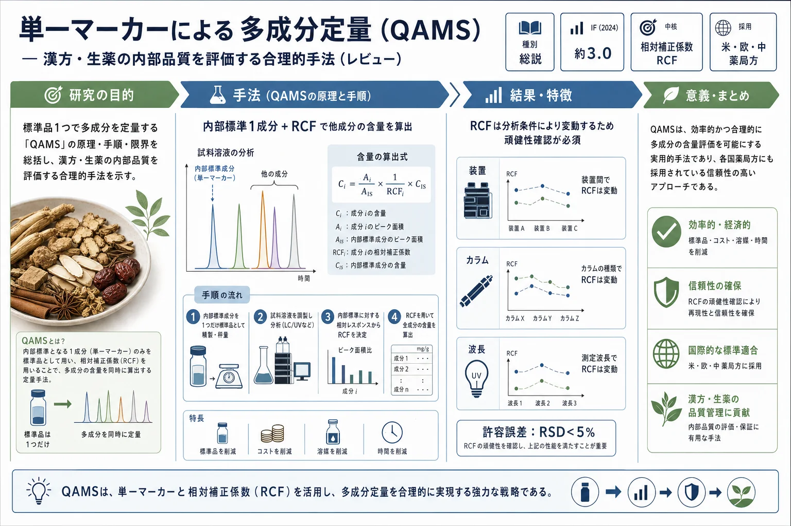
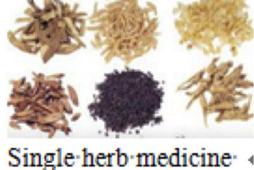
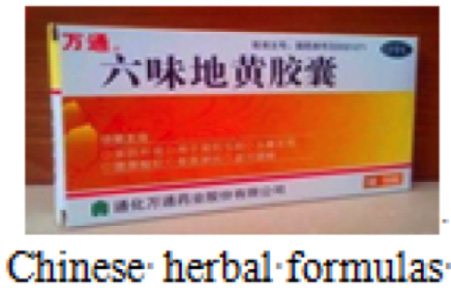

単一マーカーによる多成分定量（QAMS）— 漢方・生薬の内部品質を評価する合理的手法（レビュー）

<!-- 方針: ほぼ全訳＋必要に応じた補足。原文構成に沿って訳出。「> 補足:」は訳者注。 -->
書誌情報
- 原題: Quantitative analysis of multi-components by single marker—a rational method for the internal quality of Chinese herbal medicine
- 著者: Chunsheng Zhu, Xiaoping Li, Bing Zhang, Zhijian Lin（鄭州大学第一附属病院／北京中医薬大学, 中国）
- 掲載: Integrative Medicine Research 2017, 6, 1–11. https://doi.org/10.1016/j.imr.2017.01.008（レビュー論文, オープンアクセス CC BY-NC-ND）
- インパクトファクター: 約3.0（Integrative Medicine Research, JCR 2024 / Clarivate。出典により2.8–3.04）
- 受領 2016-10-21 / 改訂 2017-01-07 / 採録 2017-01-10 / オンライン公開 2017-02-03
補足: 本論文は実験報告ではなく QAMS 手法のレビュー。QAMS = Quantitative Analysis of Multi-components by single Marker（単一マーカーによる多成分定量）。CHM = Chinese Herbal Medicine（漢方・生薬）。RCF = Relative Correction Factor（相対補正係数）。ESM = External Standard Method（外部標準法、＝通常の絶対検量線法）。
要旨（Abstract）
漢方・生薬（CHM）の包括的な品質管理を実現するため、単一マーカーを選んで試験する従来の慣行は、CHM の相乗作用の特性と高度な分析技術の適用可能性に基づき、複数の活性成分を測定する方式へと次第に置き換えられてきた。しかし、市場の CHM の膨大さと製剤の複雑化により、定量分析用の各種標準物質の入手性の限界が、その目標実現の大きなボトルネックとなっている。これらの問題を克服するため、単一マーカーによる多成分定量（QAMS）が、CHM の内部品質を反映する新しい手法として提案・受容された。本レビューでは、QAMS の一般的内容・現状・一般手順を含めて体系的に総括し、加えて CHM の近代化・標準化における QAMS の将来応用について考察する。
1. 序論（Introduction）
CHM はその長い臨床応用と信頼できる治療効果から、近年ますます注目されている。CHM の品質管理はその治療効果を直接決定するため極めて重要だが、CHM は無数の化学物質を含み、複数の植物化学成分の相互作用が効果に寄与するため、その内部品質管理は西洋薬よりも難しい。
現在、品質管理用の成分定量には主に2つの方法がある。1つは活性成分・マーカー化合物を内部標準として用いる方法だが、他の有効成分の評価には不十分。もう1つは複数の対照物質を用いる方法だが、高純度の標準物質は高価で不足しがちで、特に低含量・精製困難な成分では深刻。さらに複雑なマトリックスから精製した一部成分は不安定になる。標準物質の希少性と高コストが、ルーチンの多成分品質管理実装の2大ボトルネックである。
この緊急課題に対し、QAMS は 2006年に Wang らによって初めて体系的に提案された。CHM の効力と他の有効成分の比率の内部関係に基づき、安価で入手容易な1成分のみを測定して複数成分を同時定量する。提案以来、研究者に認知・承認されてきた。米国薬局方（第37版）ではレッドクローバー、Echinacea angustifolia、イチョウ、セイヨウオトギリソウ、ミルクシスル等、欧州薬局方ではイチョウ葉・ニンニク末、中国薬典（2010年版）でも QAMS が採用された。
2. QAMSの原理と一般的内容
2.1 QAMSの原理（Rationale）
ある濃度範囲内で被検成分（化学成分）の吸収は試料濃度（または質量）に直線比例し、その関係は W = f·A で表せる（W: 試料濃度、A: 被検成分の応答ピーク面積、f: 補正係数）。f の値は被検物質と検出器感度に関係する定数。CHM 試料中に複数成分が共存するとき、各成分は式(1)で表せる:
式(1): Wi / Ai = fi （i = 1, 2, 3, …, n） （Ai: 被検成分のピーク面積、Wi: 被検成分の濃度）
相対補正係数（RCF）を得るため、"k" を内部参照物質、"i" を他の被検成分とすると、k と i の間の RCF は式(2)で確立される:
式(2): fki = fk / fi = (Wk·Ai) / (Wi·Ak) （i = 1, 2, 3, …, n）
fki が得られれば、CHM 試料中の他の被検物質の定量は式(3)で行える:
式(3): Wi = (Wk·Ai) / (Ak·fki)
したがって、内部参照物質の含量を測定し、RCF で他成分の含量を計算することで多成分定量が可能になる。
2.2 QAMS研究の一般的内容
外部標準法（ESM）では全被検成分に対応する標準品の含量決定が必要だが、QAMS では内部標準物質1つの含量だけでよい。これにより検出時間・実験コストを大幅に削減し、実用性を高め、より効果的・包括的に品質管理できる。QAMS 研究のプロセスは3段階に分けられる。
- 第1段階: HPLC法の最適化とバリデーション。 適切な移動相・溶出モード・検出波長の選択が重要。精度・再現性・安定性・回収率を検討し、各被検化合物の検量線（r²・直線範囲・LOD・LOQ）を求めて ESM での含量も算出。
- 第2段階: QAMSの頑健性（ruggedness・robustness）。 RCF に影響しうる全因子（異なるカラム・HPLC装置・環境条件・流速・カラム温度）を検討。RSD を計算して妥当性を評価（一般に RSD < 5% なら誤差の RCF への影響は小さい）。被検成分の位置同定のため、内部参照標準との相対保持時間を異なるカラム・装置で調べる。
- 第3段階: QAMSの実行可能性の評価・検証。 まず内部参照標準の含量を求め、RCF で他標準品の含量を取得。次に全標準品の含量を ESM で計算。QAMS と ESM の3連測定の結果の RSD が5%未満なら QAMS の構築は成功。最終的に QAMS 品質評価システムを確立する。
補足（原文 Fig.1 のワークフロー要約）: 「HPLC条件の最適化 → 標的ピークの直線性 → HPLC法のバリデーション → ESMで多成分含量を計算」「カラム/装置/ラボのRCFへの影響＋クロマトピーク位置の同定 → QAMSで多成分含量を計算」→ 両者を比較 → QAMS品質評価システムを確立。


3. CHMにおけるQAMS研究の進展
QAMS 研究は2006年頃から登場し、過去10年で成果が増加。Analytical and Bioanalytical Chemistry、Food Chemistry、Journal of Chromatography A 等にも掲載。中国薬典2010年版は黄連（Rhizoma coptidis）中のベルベリン・エピベルベリン・コプチシン・パルマチン・ジャトロリジンの含量決定に QAMS を収載。研究対象は単一生薬・漢方処方・中成薬に大別され、単一生薬が大多数を占める（処方・製剤は成分が複雑でマーカー決定が容易でないため）。
Table 1. CHMに対するQAMS研究の例（原文 Table 1 の抜粋。内部標準＝下線の成分。番号は成分の通し番号。全件・文献番号は原文参照）
| 対象 | 測定成分 | 内部標準 | 相対補正係数(RCF) |
|---|---|---|---|
| Coptidis Rhizoma（黄連） | berberine(1); jatrorrhizine(2); columbamine(3); epiberberine(4); coptisine(5); palmatine(6)（各塩酸塩） | berberine HCl | f1/2=1.131; f1/3=0.999; f1/4=1.011; f1/5=1.076; f1/6=1.025 |
| Epimedii Herba（淫羊藿） | icariin(1); epimedin A(2); B(3); C(4) | icariin | f1/2=1.352; f1/3=1.384; f1/4=1.340 |
| Zhilining tablets | dehydroandrographolide(1); andrographolide(2); costunolide(3); dehydrocostuslactone(4) | dehydroandrographolide | f1/2=0.872; f1/3=1.424; f1/4=1.337 |
| Danshen mixture（丹参） | sodium danshensu(1); protocatechuic aldehyde(2); caffeic acid(3); rosmarinic acid(4); salvianolic acid B(5) | sodium danshensu | f2/1=7.292; f3/1=4.265; f4/1=3.519; f5/1=2.749 |
| Yinqiao Jiedu 製剤 | chlorogenic acid(1); neochlorogenic(2); 4-caffeoylquinic(3); caffeic(4); isochlorogenic B(5); A(6); C(7) | chlorogenic acid | f2/1=1.088; f3/1=1.109; f4/1=0.592; f5/1=0.940; f6/1=0.871; f7/1=0.799 |
| Rhei Radix et Rhizoma（大黄） | rhein(1); gallic acid(2); catechin(3); emodin-8-O-glucoside(4); aloe-emodin(5); emodin(6); chrysophanol(7); physcion(8) | rhein | f1/2=3.75; f1/3=3.08; f1/4=0.89; f1/5=0.75; f1/6=1.79; f1/7=1.57; f1/8=0.42 |
| Alismatis Rhizoma（沢瀉） | alisol B 23-acetate(1); alisol A(2); alisol A 24-acetate(3); alisol B(4) | alisol B 23-acetate | f1/2=0.9874; f1/3=1.097; f1/4=0.9777 |
| Aristolochia contorta（馬兜鈴） | aristolochic acid A(1); B(2); C(3); D(4) | aristolochic acid A | f2/1=0.8389; f3/1=0.7822; f4/1=0.7782 |
| Magnoliae Flos extract（辛夷） | magnolin(1); pinoresinol dimethylether(2); lirioresinol B dimethylether(3); epi-magnolin A(4) | magnolin | f1/2=0.9968; f1/3=0.9735; f1/4=1.0068 |
| Schisandra chinensis（五味子） | schizandrol A(1); B(2); schisantherin A(3); deoxyschizandrin(4); schizandrin B(5); C(6) | schizandrol A | f1/2=0.8175; f1/3=0.8233; f1/4=0.9758; f1/5=0.9652; f1/6=0.6732 |
| Yao-Bi-Tong capsules | ginsenoside Rg1(1); notoginsenoside R1(2); ginsenoside Re(3); Rb1(4); Rd(5) | ginsenoside Rg1 | f1/2=0.999; f1/3=1.218; f1/4=0.990; f1/5=1.094 |
| Compound danshen 製剤 | danshensu(1); protocatechuic acid(2); aldehyde(3); caffeic(4); rosmarinic(5); lithospermic(6); notoginsenoside R1(7); salvianolic acid B(8) | danshensu | f1/2=7.237; f1/3=7.119; f1/4=6.272; f1/5=3.272; f1/6=1.917; f1/7=0.980; f1/8=1.694 |
| Chrysanthemum Indicum Flower（野菊花） | linarin(1); chlorogenic acid(2); luteolin-7-O-glucoside(3); 3,4-/3,5-di-O-caffeoylquinic acid(4–6) | linarin | f1/2=0.71; f1/3=1.01; f1/4=0.66; f1/5=0.61; f1/6=0.60 |
| Houttuynia cordata（魚腥草） | chlorogenic(1); neochlorogenic(2); cryptochlorogenic(3); rutin(4); hyperin(5); isoquercitrin(6); quercitrin(7) | chlorogenic acid | f1/2=1.004; f1/3=0.995; f1/4=0.599; f1/5=0.856; f1/6=0.859; f1/7=0.862 |
| Ilex Pubescens（毛冬青） | ilexgenin A(1); ilexoside O(2); ilexsaponin B3(3); B2(4); B1(5); A1(6) | ilexgenin A | f2/1=0.336; f3/1=0.318; f4/1=0.455; f5/1=0.574; f6/1=0.509 |
| Angelicae Sinensis Radix（当帰） | ferulic acid(1); senkyunolide A(2); Z-ligustilide(3) | ferulic acid | f2/1=1.103; f3/1=1.612 |
| Radix Aconiti Lateralis（附子） | aconitine(1); benzoylmesaconine(2); benzoylhypaconine(3); hypaconitine(4); mesaconitine(5) | aconitine | f2/1=1.015; f3/1=1.039; f4/1=1.074; f5/1=0.803 |
| Hawthorn leaves（山査子葉） | vitexin-4-O-glucoside(1); chlorogenic acid(2); vitexin-2-O-rhamnoside(3); vitexin(4); rutin(5); hyperoside(6) | vitexin-4-O-glucoside | f1/2=1.119; f1/3=1.009; f1/4=0.706; f1/5=1.063; f1/6=0.830 |
| P. cuspidatum（虎杖） | emodin(1); resveratrol(2); emodin-8-O-glucopyranoside(3); polydatin(4) | emodin(1); resveratrol(2) | f1/3=1.119; f2/4=1.78 |
4. QAMS確立で考慮すべき重要因子
QAMS は標準物質不足を克服し高い試験コストを節約できる一方、内部標準物質の選択・RCF の影響因子・被検成分の位置同定・妥当性評価法の選択など、検討すべき問題が残る。
4.1 内部標準物質の選択
内部標準物質は、(1) 明確な治療効果と化学的安定性をもち、(2) 入手容易・安価で、(3) CHM 中に適切な含量をもつものを選ぶ。例: Li らは丹参の QAMS でタンシノンIIA を選択（主要有効成分かつ高含量・入手容易）。これらの原則を満たさない選択は QAMS の思想から逸脱と見なされる。
4.2 RCFに影響する因子
QAMS では内部標準と他有効成分間の RCF 確立が鍵。RCF に影響する主因子は、異なるラボ・クロマト装置システム・充填剤・カラム機種。RCF の良好な再現性は分析結果の精度の鍵であり、十分な検討が必要。
- 4.2.1 ラボの違い: 同一ラボ・同条件でも、装置やオペレーターの違いで RCF に小差。一般に RSD < 5% なら異なるラボでも使用可。Wu らは Zhong-Jie-Feng 注射剤で異なるラボの RCF 再現性を確認。
- 4.2.2 HPLC装置・検出器の違い: 装置・検出器はピーク面積計算（スリット・バンド幅・スロープ感度・ピーク幅・積分法）に影響。Waters・Agilent・Shimadzu が一般的。Duan らは3機種（Waters・DIONEX・Shimadzu）で影響が小さいことを確認。検出器（UV-Vis・PDA・蛍光・ELSD・示差屈折）は同型を使い、構造に応じ適切な波長を選ぶ（測定誤差低減）。例: Shenxiong Yangxin 顆粒では puerarin 250、ferulic acid 321、hesperidin 283、salvianolic acid B 286、ammonium glycyrrhizinate 237、schisandrin 250 nm が最適吸収波長。
- 4.2.3 カラムの違い: 固定相の粒度・表面積・エンドキャッピング・内径・長さの違いがテーリング/対称係数・分離度・理論段数に影響し、RCF を左右する。逆相 C18（例: Agilent ZORBAX SB-C18, Eclipse XDB-C18）が一般的。移動相比率・流速・カラム温度も RCF の偏差要因で、条件最適化で制御する。
4.3 被検成分の位置同定
内部標準のみを参照物質とするため、他成分のピーク位置の直接同定が難しい。主な位置同定法は、被検成分と内部標準の 保持時間比 と 相対保持時間比 の2つ。
4.4 QAMS妥当性評価法の選択
正確さ・実行可能性の検証には合理的な評価法が必要。最も一般的なのは ESM（QAMS 計算値と ESM に有意差がなければ RCF の再現性・信頼性が良好）。他に内部標準法・線形回帰法もある。
5. QAMSの利点と限界
5.1 利点
- 5.1.1 CHMの多成分・多標的特性の反映: 単一標準では内部品質を正確に反映できず、多成分モデルは多数の標準品を要する。QAMS は1成分の測定で複数成分の同時測定を可能にし、多標的性を体現する。
- 5.1.2 経済性・省力・環境保護: RCF により標準品が入手不能・不安定でも含量を正確に算出でき、作業効率向上・コスト削減。有機溶媒消費も少なく環境負荷も低い。例: 緑茶の10成分（EGCG・没食子酸・カテキン類・カフェイン等）を EGCG 1つの測定＋RCF で算出。
- 5.1.3 指紋（fingerprint）の曖昧さの補完: 指紋は全成分の概観と試料間の「同一性・差異」を示すが、相対値による類似度しか示せず微差を区別しにくい。QAMS は主要・有効成分の含量に重きを置き、指紋データを定量的に補強する。
5.2 限界
- 5.2.1 被検成分・検出波長の制約: UV-Vis 検出が主のため、被検成分は構造が類似し最大波長付近で吸収をもつ必要がある。内部参照と他成分で吸収スペクトルが異なる場合、(1) 全成分共通の吸収波長域を選ぶ、(2) グラジエント中に各成分の最大吸収波長で可変波長検出する、の2解決策。例: Bai らは桂枝湯の QAMS で paeoniflorin 230、glycyrrhizic acid 250、甘草配糖体・桂皮酸・シンナムアルデヒド 280 nm で検出。
- 5.2.2 直線範囲の制約: 収穫時期・産地・気候などが有効成分含量に影響し、ある成分の含量が直線範囲外だと QAMS は正確さを保てない。これが標準化の課題。
6. QAMS対応のクロマト技術
HPLC が最も一般的で、各種検出器（UV・DAD・ELSD）と組み合わせ可能。揮発性成分にはガスクロマトグラフィー（GC）が有用（精油含有 CHM の QC、ただし QAMS への適用報告は現時点でなく今後）。他に高速キャピラリー電気泳動・UHPLC・親水性相互作用クロマト（HILIC）・LC-MS/MS も推奨。UHPLC は小粒子（2 µm未満）カラムで分離効率・分解能・感度向上と時間短縮、溶媒消費・環境負荷低減が可能。
7. 今後のQAMS応用への提言
QAMS は有望だが、まだ初期段階で成熟・安定には至っていない。提言:
- RCF の影響因子に注力: RCF は QAMS の核かつ主要誤差要因。カラム・装置・波長選択が特に影響。RSD が許容範囲（一般に5%）内なら、コスト削減・標準品不足克服の利点をもつ実用的手法として受容できる。
- スペクトル効果相関（spectrum-effect relationship）と QAMS の組合せ: 指紋と薬効の関係を統計解析で示し活性ピークを選別、LC-MS/MS で構造決定して真の「マーカー」を提供。中医学の全体観にも合致。
- コンピュータ支援薬物設計（CADD）と QAMS の組合せ: 仮想スクリーニング（分子ドッキング・ファーマコフォア・フラグメント探索）等で多標的特性と効力成分を解明、時間・コスト効率に優れる。
QAMS は化学・薬理・分子生物学・統計の交差する学際研究であり、その改善は CHM の有効性・安全性の担保と国際化を加速する。
訳者補足（実務向けメモ）
以下は原文には無い、QC実務向けの整理（訳者注）。
- 要は「標準品を1つに減らす」定量法。高価・入手難・不安定な標準品が多い多成分処方で、内部標準1成分＋RCF（相対補正係数）で他成分の含量を計算する。コスト・時間・溶媒を削減できるのが最大の利点。
- 実装の肝は RCF の移植性。RCF は装置・カラム・波長で変動するので、自施設で RSD < 5% に収まるかの頑健性確認が必須。値をそのまま借用せず、必ず ESM（通常の検量線法）と突き合わせて検証する。
- 薬局方での実績: 米国・欧州・中国薬局方が採用済み（黄連の5アルカロイドなど）。規格化の前例として参照価値が高い。
- 限界の裏返しが運用条件: 被検成分は構造・吸収が近いものを選ぶ／含量が直線範囲を外れるロットでは精度が落ちる。産地・収穫期でのばらつきが大きい成分は QAMS 単独に頼らない方が安全。
- 本論文は 手法レビューなので、自社処方に当てはめる際は本文の「3段階手順」と「4章の影響因子」をチェックリストとして使える。Table 1 は適用例カタログ（全件・文献は原文）。